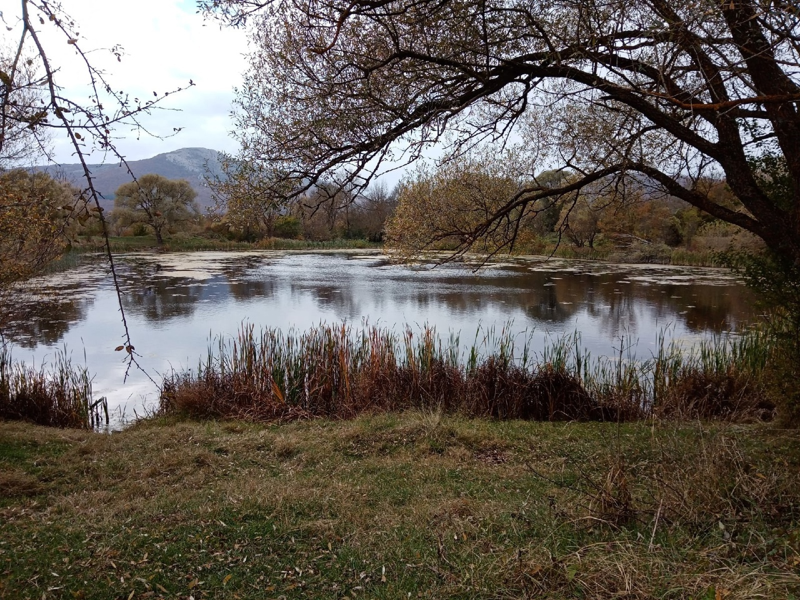

Самым живописным и удивительным местом полуострова Крым по праву можно назвать Байдарскую долину. Её именуют ещё "Крымской Швейцарией", ибо ее прекрасная природа, а в особенности горы и луга очень и очень напоминают многим знаменитые Швейцарские Альпы. Байдарская Долина - уникальнейшее по своей экологической составляющей место, она окружена Внутренней грядой Крымских гор, а также имеет на своей территории Байдарский Заповедник, содержащий множество уникальных животных и растений из Красной Книги Российской Федерации, например таких растения как:
Орхидеи, Можжевельник Высокий, Ясколка Биберштейна и др., а также такие животные как: Кабан, Олень, Фазан, Лисица, Заяц,
Горлица. Вокруг Долины расположены села, в которых родились, жили или живут известные эзотерики. Люди, являющиеся приверженцами этно-культуры стекаются в эту волшебную долину из-за великолепной, древней энергетики, которой питают долину девстевенно чистые природные ландшафты и её история. По повериям, в Байдарской долине много веков жили ведьмы, маги и чернокнижники. Земли долины многие века считалась магическими и колдовскими, а саму долину называли (и продолжают называть, в особенности старые жители) "Долиной ведьм", магическая энергия, которой буквально пропитаны эти волшебные земли, и являтся одной из главных причин, по которой этники и эзотерики съезжаются сюда со всех уголоков мира, а люди, рожденные в этих краях являются уникальными, они обладают пророческими навыками, в особенности хорошо отражающимися в их снах, а так же тяготеют к изучению эзотерики и духовных практик, это, у "детей долины", буквально в крови. Главными местами сосредоточения магической энергетики долины, являются так называемые "канонические села", но самое легендарное из них село, которое является центром долины и которое, по поверию породило все остальные сёла - Орлиное (место рождения Артёма Кармакова), являющееся центром Байдарской Долины, имеет три озера, в каждом из которых, по легенде, заключены "частицы души долины", первое озеро - "Четвёртый Котлован", по легенде, создатель вселенной выкопал в честь оснвания долины четыре котлована, в которых собирался разместить четыре хранителя природы, отвечающих за четыре элемента - воздух, воду, землю и огонь. Создатель разместил озера в самых дальних уголках долины, заключил в каждом по хранителю, и законочил свое дело, но была одна группа магов, называвшая себя "Владыки разрушения", в нее входило четыре человека: Чернокнижник Аринар, Маг-заклинатель Висмас, Шаман Сиат и Пророк Сайтма. Они хотели завладеть хранителями, чтобы подчинить себе природу долины и стать её богами. Пророк Сайтма через видения проник в мысли создателя и узнал о расположении всех котлованов. Первый котлован, находящийся в глубине леса, на окраине села Орлиное начал проклинать Аринар. Создатель, узнав о насылаемых проклятиях и о замысле "Владык Разрушения" послал видение светлому магу из группы "Дети Создателя", с просьбой о защите хранителей природы долины. Группа светлых магов состояла из двух человек - пророк и светлый маг Лев и травник - Висмуас, также создатель послал Льву видение, в котором объяснил, куда движутся разрушители. Светлые маги собрались в поход, взяв с собой дарованный некогда сыном создателя "Элементаль жизни", в него в случае уничтожения первого котлована, светлые маги собирались переместить хранителя земли. Настигнув группу Владык, светлые маги вступили с ними в бой, но вдруг, Элементаль жизни вылетел из кармана Льва. Он поднялся ввысь и начал источать зеленоватое свечение, сразу же после этого, во время боя магов, из кармана пророка Сайтмы вылетел похожий на Элементаль жизни предмет, который, как выяснили летописцы позже являлся Элементалем смерти, он также поднялся вверх и стал источать свечение, но только черное. Элементали стали сближаться и слились в один элементаль, выделив огромную энергетическую волну от слияния, которая погубила две группы магов и зарыла три котлована, которые создатель по ошибке расположил слишком близко друг к другу. В результате хранители оказались закопаны в земле и никто ныне не знает, где именно они зарыты, однако единственный, созданный создателем котлован, а именно Четвёртый, оказался цел, и к хранителю воздуха, обитающему в нем, сразу же обратился создатель, с целью защитить его, для этого он дал ему частичку своей души, что сделало его вечным, и что, в последствии сделало его частичкой души Долины.
Фото четвертого котлована
 остальные частички души заключил создатель в озерах "Старая плотина" и "Новая плотина". У "Новой плотины" жили люди, которые верили, что вселенная и Долина создана братом создателя - Веруитом, а люди, жившие у "Старой плотины" верили в самого создателя. У "Новой плотины" люди приносили в жертву Веруиту моллюсков и водных змей, они разводили их в плотине и передавали навык разведения из поколения в поколение. Люди же, жившие у "Старой плотины" приносили в жертву создателю уток и нутрий, которых тоже выращивали в плотине и также через поколения передавали навыки выращивания этих животных. До сих пор у берегов "Старой плотины" можно встретить нутрий и уток, а у торговцев около "Новой плотины" можно купить улиток для жарки. Чтобы закрепить эту многолетнюю и истинную веру двух поколений в себя и своего брата, создатель дал озерам поколений по частичке своей души, оставив последнюю, четвертую частицу.
Фото Новой плотины

Фото Старой плотины

четвертую же частицу создатель заключил в селе Широкое. Село Широкое находится примерно в 5км от Орлиного, у подножья "Великой" горы. Люди села Широкое были великими пророками, они делились мыслями создателя со всеми людьми, из всех сёл, лесники села хранили природу Долины от разрушения темными магами, а также в Широком, по легенде, был рожден сын создателя - Артий. Это велиий маг, который, по той же легенде, продолжает жить в пещере, на горе "Великанский пупок", которая расположена здесь же. В награду за искреннюю веру и доброе волшебство жителей Широкого, и дабы дать защиту своему сыну, родившемуся и живущему здесь создатель поместил последнюю частицу души, в одну из четырех скал правой горы из гряды Великих гор, после чего растворился в пространстве и разделив себя, таким образом, на четыре части в долине.
Село Широкое